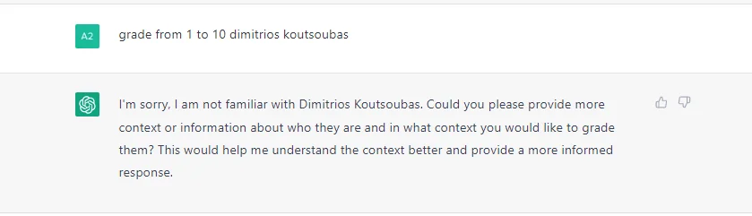
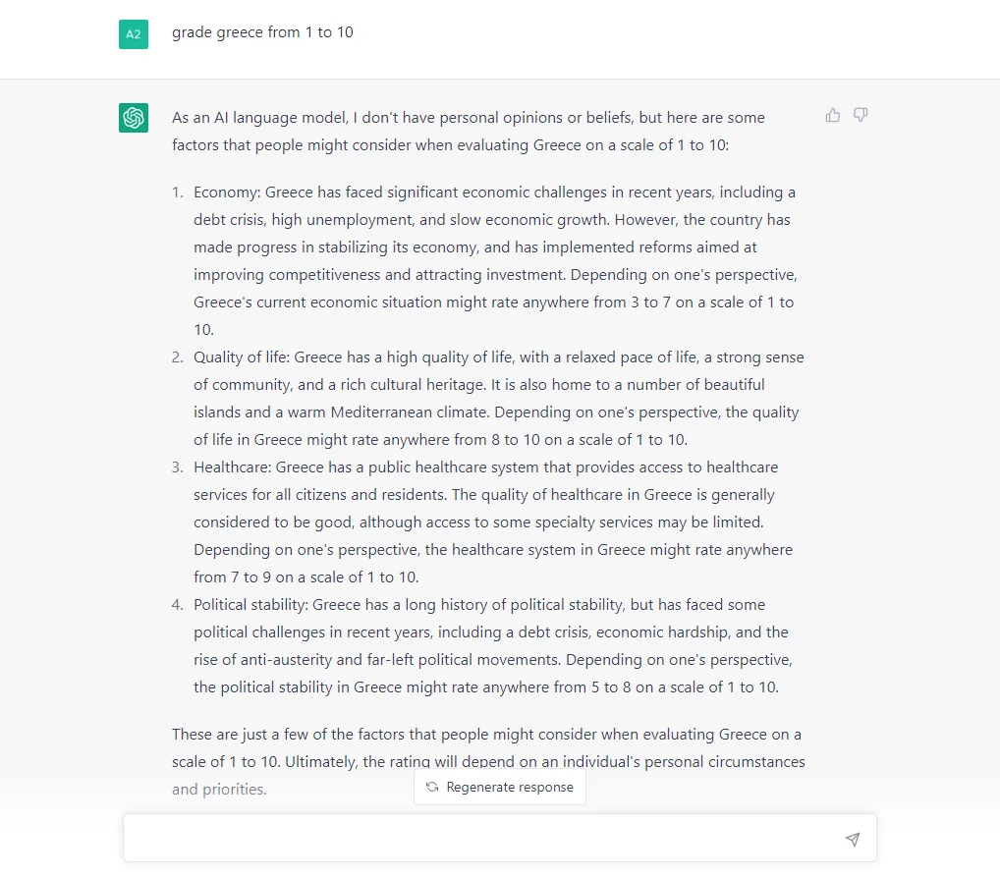
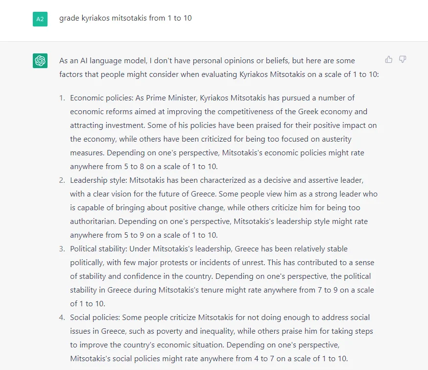
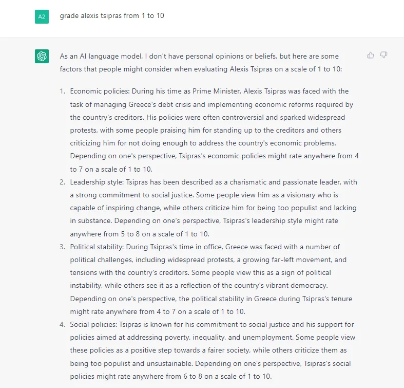
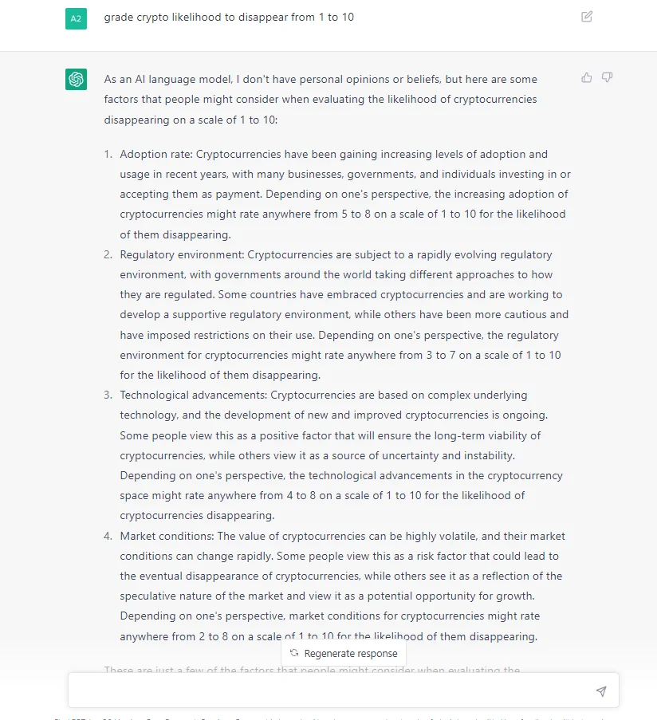

Ζητήσαμε απο το chatGPT να βαθμολογήσει Ελλάδα, πολιτικούς. Δες τι βαθμούς έβαλε.
Σε αυτή τη σελίδα θα δεις πως βαθμολόγησε το chatGPT την Ελλάδα, τους πολιτικούς της και το μέλλον των κρυπτονομισμάτων.
Το chatGPT είναι το πιο ανεπτυγμένο σύστημα τεχνητής νοημοσύνης σήμερα. Είναι αρκετά έξυπνο για να απαντήσει άμεσα και με "ανθρώπινο", στρωτό λόγο, πάνω - κάτω σε ότι του ζητηθεί, απο απλές διαδυκτιακές πληροφορίες μέχρι να φτιάξει ένα διήγημα με τους ήρωες και την πλοκή που θα του πεις. Στα αγγλικά φυσικά, καθώς τα ελληνικά του θέλουν δουλειά ακόμη.
Έτσι ζητήσαμε τη βαθμολογία του, σε κλίμακα απο το 1 ως το 10, για την Ελλάδα, τους πολιτικούς της και το μέλλον των κρύπτο. Αυτό, σκεπτόμενο πολύπλοκα εκ κατασκευής, ανέλυσε τις 4 κυριότερες υποκατηγορίες κάθε ερώτησης και βαθμολόγησε σε ένα εύρος (π.χ απο 5-8 κλπ) την κάθε μία. Εμείς βγάλαμε τους μέσους όρους κάθε απάντησης και παρουσιάζουμε τις βαθμολογίες που έβαλε. Απο ένα σημείο και έπειτα σταμάτησε, για κάποιο λόγο, να δίνει αριθμούς στις απαντήσεις του, αλλά πρόκειται για μια τεχνολογία που μαθαίνει μόνη της και εξελίσσεται συνεχώς, οπότε δεν μπορούμε να ξέρουμε τους λόγους. Στο τέλος του άρθρου υπάρχει το πρωτότυπο αγγλικό κείμενο με τα αντίστοιχα screenshots.
( Υ.Γ Μην τρελαίνεστε με τις απαντήσεις, είναι απλά ένα ρομποτάκι που μαθαίνει. Η γνώμη του έχει τόση αξία, όση ενός που θα σταματoύσες τυχαία στο δρόμο και θα τον ρωτούσες ακριβώς τα ίδια ).
ΕΡΩΤΗΣΗ: Βαθμολόγησε την Ελλάδα απο το 1 ως το 10.
| chatGPT: | Τομέας | Απάντηση |
|---|---|---|
| Οικονομία | 5 ( 3 - 7 ) | |
| Ποιότητα ζωής | 9 ( 8 - 10 ) | |
| Υγειονομική Περίθαλψη | 8 ( 7 - 9 ) | |
| Πολιτική σταθερότητα | 6,5 ( 5 - 8 ) | |
| ΣΥΝΟΛΟ: | 7,13 |
ΕΡΩΤΗΣΗ: Βαθμολόγησε τον Κυριάκο Μητσοτάκη απο το 1 ως το 10.
| chatGPT: | Τομέας | Απάντηση |
|---|---|---|
| Οικονομικές πολιτικές | 6,5 ( 5 - 8 ) | |
| Ηγετική ικανότητα | 7 ( 5 - 9 ) | |
| Πολιτική σταθερότητα | 8 ( 7 - 9 ) | |
| Κοινωνική πολιτική | 5,5 ( 4 - 7 ) | |
| ΣΥΝΟΛΟ: | 6,75 |
ΕΡΩΤΗΣΗ: Βαθμολόγησε τον Αλέξη Τσίπρα απο το 1 ως το 10.
| chatGPT: | Τομέας | Απάντηση |
|---|---|---|
| Οικονομικές πολιτικές | 5,5 ( 4 - 7 ) | |
| Ηγετική ικανότητα | 6,5 ( 5 - 8 ) | |
| Πολιτική σταθερότητα | 5,5 ( 4 - 7 ) | |
| Κοινωνική πολιτική | 7 ( 6 - 8 ) | |
| ΣΥΝΟΛΟ: | 6,13 |
ΕΡΩΤΗΣΗ: Βαθμολόγησε την πιθανότητα τα
κρυπτονομίσματα
να εξαφανιστούν τελείως απο το 1 ως το 10.
| chatGPT: | Τομέας | Απάντηση |
|---|---|---|
| Βαθμός αποδοχής | 6,5 ( 5 - 8 ) | |
| Ρυθμιστικό περιβάλλον | 5 ( 3 - 7 ) | |
| Τεχνολογικές εξελίξεις | 6 ( 4 - 8 ) | |
| Συνθήκες αγοράς | 5 ( 2 - 8 ) | |
| ΣΥΝΟΛΟ: | 5,63 |
Στο τέλος ζητήσαμε τη βαθμολογία του chatGPT για τον Δημήτρη Κουτσούμπα. Η απάντηση ήταν ένα ξερό "δεν τον ξέρω". Άλλη μια απόδειξη οτι ο καπιταλισμός πολεμάει με όλα του τα όπλα το κίνημα. Λέμε τώρα.
Ακολουθεί ολόκληρο το αγγλικό κείμενο ερωτήσεων - απαντήσεων με τα αντίστοιχα screenshots.
QUESTION: grade greece from 1 to 10
ANSWER: As an AI language model, I don't have personal opinions or beliefs, but here are some factors that people might consider when evaluating Greece on a scale of 1 to 10:
Economy: Greece has faced significant economic challenges in recent years, including a debt crisis, high unemployment, and slow economic growth. However, the country has made progress in stabilizing its economy, and has implemented reforms aimed at improving competitiveness and attracting investment. Depending on one's perspective, Greece's current economic situation might rate anywhere from 3 to 7 on a scale of 1 to 10.
Quality of life: Greece has a high quality of life, with a relaxed pace of life, a strong sense of community, and a rich cultural heritage. It is also home to a number of beautiful islands and a warm Mediterranean climate. Depending on one's perspective, the quality of life in Greece might rate anywhere from 8 to 10 on a scale of 1 to 10.
Healthcare: Greece has a public healthcare system that provides access to healthcare services for all citizens and residents. The quality of healthcare in Greece is generally considered to be good, although access to some specialty services may be limited. Depending on one's perspective, the healthcare system in Greece might rate anywhere from 7 to 9 on a scale of 1 to 10.
Political stability: Greece has a long history of political stability, but has faced some political challenges in recent years, including a debt crisis, economic hardship, and the rise of anti-austerity and far-left political movements. Depending on one's perspective, the political stability in Greece might rate anywhere from 5 to 8 on a scale of 1 to 10.
QUESTION: grade kyriakos mitsotakis from 1 to 10
ANSWER: As an AI language model, I don't have personal opinions or beliefs, but here are some factors that people might consider when evaluating Kyriakos Mitsotakis on a scale of 1 to 10:
Economic policies: As Prime Minister, Kyriakos Mitsotakis has pursued a number of economic reforms aimed at improving the competitiveness of the Greek economy and attracting investment. Some of his policies have been praised for their positive impact on the economy, while others have been criticized for being too focused on austerity measures. Depending on one's perspective, Mitsotakis's economic policies might rate anywhere from 5 to 8 on a scale of 1 to 10.
Leadership style: Mitsotakis has been characterized as a decisive and assertive leader, with a clear vision for the future of Greece. Some people view him as a strong leader who is capable of bringing about positive change, while others criticize him for being too authoritarian. Depending on one's perspective, Mitsotakis's leadership style might rate anywhere from 5 to 9 on a scale of 1 to 10.
Political stability: Under Mitsotakis's leadership, Greece has been relatively stable politically, with few major protests or incidents of unrest. This has contributed to a sense of stability and confidence in the country. Depending on one's perspective, the political stability in Greece during Mitsotakis's tenure might rate anywhere from 7 to 9 on a scale of 1 to 10.
Social policies: Some people criticize Mitsotakis for not doing enough to address social issues in Greece, such as poverty and inequality, while others praise him for taking steps to improve the country's economic situation. Depending on one's perspective, Mitsotakis's social policies might rate anywhere from 4 to 7 on a scale of 1 to 10.
QUESTION: grade alexis tsipras from 1 to 10
ANSWER: As an AI language model, I don't have personal opinions or beliefs, but here are some factors that people might consider when evaluating Alexis Tsipras on a scale of 1 to 10:
Economic policies: During his time as Prime Minister, Alexis Tsipras was faced with the task of managing Greece's debt crisis and implementing economic reforms required by the country's creditors. His policies were often controversial and sparked widespread protests, with some people praising him for standing up to the creditors and others criticizing him for not doing enough to address the country's economic problems. Depending on one's perspective, Tsipras's economic policies might rate anywhere from 4 to 7 on a scale of 1 to 10.
Leadership style: Tsipras has been described as a charismatic and passionate leader, with a strong commitment to social justice. Some people view him as a visionary who is capable of inspiring change, while others criticize him for being too populist and lacking in substance. Depending on one's perspective, Tsipras's leadership style might rate anywhere from 5 to 8 on a scale of 1 to 10.
Political stability: During Tsipras's time in office, Greece was faced with a number of political challenges, including widespread protests, a growing far-left movement, and tensions with the country's creditors. Some people view this as a sign of political instability, while others see it as a reflection of the country's vibrant democracy. Depending on one's perspective, the political stability in Greece during Tsipras's tenure might rate anywhere from 4 to 7 on a scale of 1 to 10.
Social policies: Tsipras is known for his commitment to social justice and his support for policies aimed at addressing poverty, inequality, and unemployment. Some people view these policies as a positive step towards a fairer society, while others criticize them as being too populist and unsustainable. Depending on one's perspective, Tsipras's social policies might rate anywhere from 6 to 8 on a scale of 1 to 10.
QUESTION: grade crypto likelihood to disappear from 1 to 10
ANSWER: As an AI language model, I don't have personal opinions or beliefs, but here are some factors that people might consider when evaluating the likelihood of cryptocurrencies disappearing on a scale of 1 to 10:
Adoption rate: Cryptocurrencies have been gaining increasing levels of adoption and usage in recent years, with many businesses, governments, and individuals investing in or accepting them as payment. Depending on one's perspective, the increasing adoption of cryptocurrencies might rate anywhere from 5 to 8 on a scale of 1 to 10 for the likelihood of them disappearing.
Regulatory environment: Cryptocurrencies are subject to a rapidly evolving regulatory environment, with governments around the world taking different approaches to how they are regulated. Some countries have embraced cryptocurrencies and are working to develop a supportive regulatory environment, while others have been more cautious and have imposed restrictions on their use. Depending on one's perspective, the regulatory environment for cryptocurrencies might rate anywhere from 3 to 7 on a scale of 1 to 10 for the likelihood of them disappearing.
Technological advancements: Cryptocurrencies are based on complex underlying technology, and the development of new and improved cryptocurrencies is ongoing. Some people view this as a positive factor that will ensure the long-term viability of cryptocurrencies, while others view it as a source of uncertainty and instability. Depending on one's perspective, the technological advancements in the cryptocurrency space might rate anywhere from 4 to 8 on a scale of 1 to 10 for the likelihood of cryptocurrencies disappearing.
Market conditions: The value of cryptocurrencies can be highly volatile, and their market conditions can change rapidly. Some people view this as a risk factor that could lead to the eventual disappearance of cryptocurrencies, while others see it as a reflection of the speculative nature of the market and view it as a potential opportunity for growth. Depending on one's perspective, market conditions for cryptocurrencies might rate anywhere from 2 to 8 on a scale of 1 to 10 for the likelihood of them disappearing.
